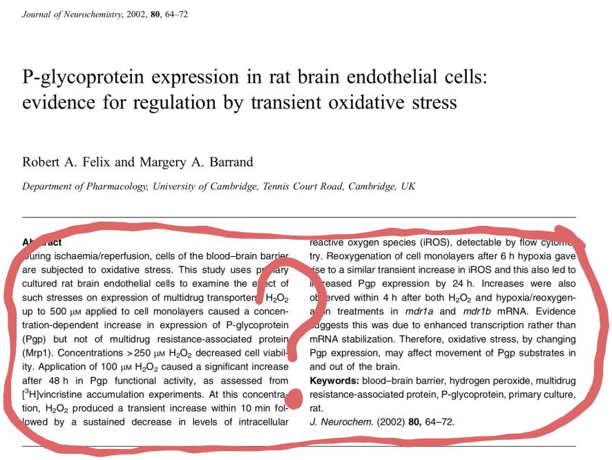
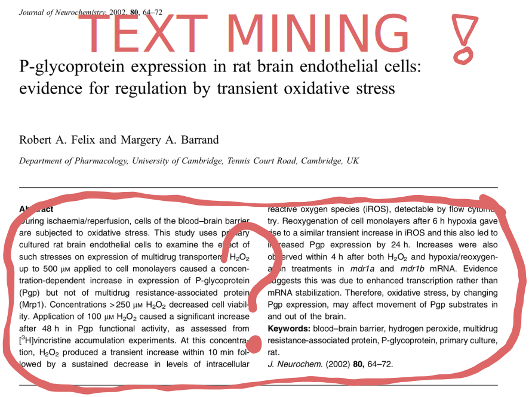
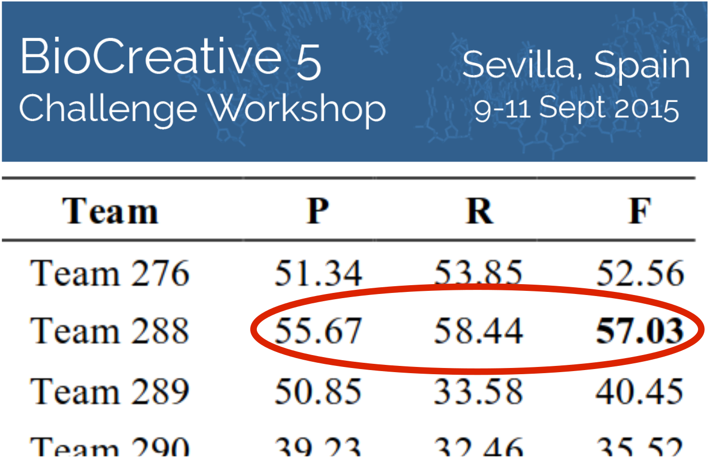
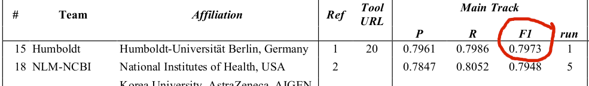
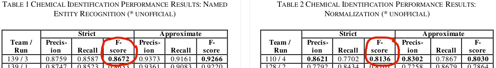
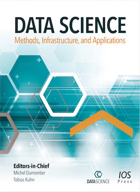
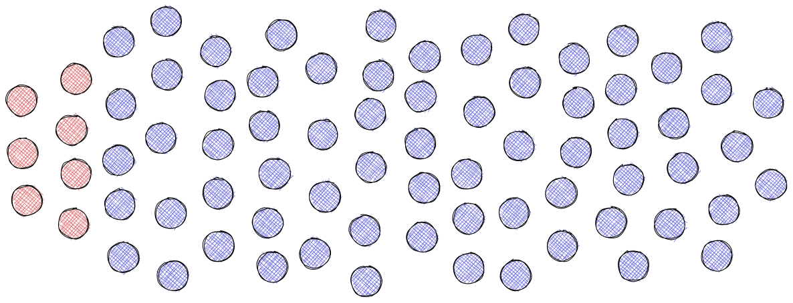
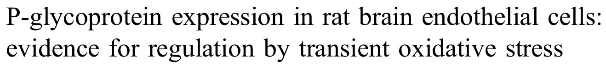
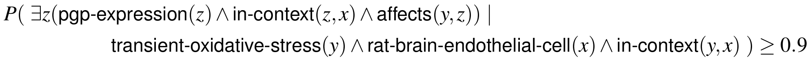

Welcome to the New Era of Scientific Publishing
Tobias Kuhn
VU Amsterdam
http://www.tkuhn.org
IOS Press 35 Year Anniversary, 31 March 2022
These slides: https://www.tkuhn.org/sempub-ios-talk/
Task for a Developer:
Retrieve all genes that have been found to play a role in a part of the respiratory system in Covid-19 patients. Only include results from randomized controlled trials published in the last seven days.
Sounds easy on the face of it...
Problem: Scientific Results are Represented in Plain Text Only
Problem: Scientific Results are Represented in Plain Text Only
Relation Mining in 2015
Chemical-disease relation extraction:
Drug-gene relation type extraction:
Named entity recognition/linking of chemicals:
Still Not Good Enough (by far)
Around 60% of retrieved relations are wrong and 60% of existing relations are not retrieved.
"Text mining? ... Why bury it first and then mine it again?" (Barend Mons)

Publishing without Burying: Special Issue at Data Science
Main Claims from 75 Random Articles across Disciplines
- 68 can be represented with the super pattern
- 7 are simple subject-predicate-object statements
How to Formally Represent Scientific Claims: Super Pattern
- Context class: rat brain endothelial cell
- Subject class: transient oxidative stress
- Qualifier: generally
- Relation: affects
- Object class: Pgp expression
"If there is an instance of transient oxidative stress in the context of a rat brain endothelial cell then it generally affects an instance of Pgp expression in the same context."
Formalization Papers
...